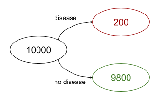
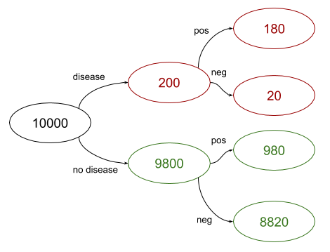
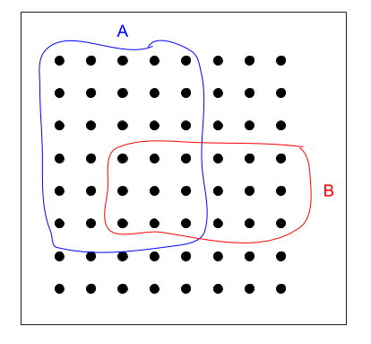
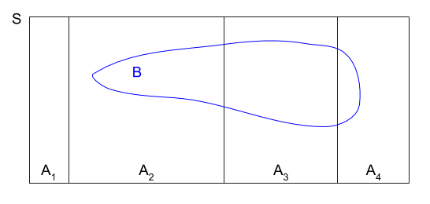

One morning, while seeing a mention of a disease on Hacker News, Bob decides on a whim to get tested for it; there are no other symptoms, he's just curious. He convinces his doctor to order a blood test, which is known to be 90% accurate. For 9 out of 10 sick people it will detect the disease (but for 1 out of 10 it won't); similarly, for 9 out of 10 healthy people it will report no disease (but for 1 out of 10 it will).
Unfortunatly for Bob, his test is positive; what's the probability that Bob actually has the disease?
You might be tempted to say 90%, but this is wrong. One of the most common fallacies made in probability and statistics is mixing up conditional probabilities. Given event D - "Bob has disease" and event T - "test was positive", we want to know what is - the conditional probability of D given T. But the test result is actually giving us - which is distinct from .
In fact, the problem doesn't provide enough details to answer the question. An important detail that's missing is the prevalence of the disease in population; that is, the value of without being conditioned on anything. Let's say that it's a moderately common disease with 2% prevalence.
To solve this without any clever probability formulae, we can resort to the basic technique of counting by cases. Let's assume there is a sample of 10,000 people [1]; test aside, how many of them have the disease? 2%, so 200.
Of the people who have the disease, 90% will test positive and 10% will test negative. Similarly, of the people with no disease, 90% will test negative and 10% will test positive. Graphically:
Now we just have to count. There are 980 + 180 = 1160 people who tested positive in the sample population. Of these people, 180 have the disease. In other words, given that Bob is in the "tested positive" population, his chance of having the disease is 180/1160 = 15.5%. This is far lower than the 90% test accuracy; conditional probability often produces surprising results. To motivate this, consider that the number of true positives (people with the disease that tested positive) is 180, while the number of false positives (people w/o the disease that tested positive) is 980. So the chance of being in the second group is larger.
Conditional probability
As the examples shown above demonstrate, conditional probabilities involve questions like "what's the chance of A happening, given that B happened", and they are far from being intuitive. Luckily, the mathematical theory of probability gives us the precise and rigorous tools necessary to reason about such problems with relative elegance.
The conditional probability means "what is the probability of event A given that we know event B occurred". Its mathematical definition is:
Notes:
- Obviously, this is only defined when .
- Here is the probability that both A and B occurred.
The first time you look at it, the definition of conditional probability looks somewhat unintuitive. Why is the connection made this way? Here's a visualization that I found useful:
The dots in the black square represent the "universe", our whole sampling space (let's call it S, and then ). A and B are events. Here and . But what is ? Let's figure it out graphically. We know that the outcome is one of the dots encircled in red. What is the chance we got a dot also encircled in blue? It's the number of dots that are both red and blue, divided by the total number of dots in red. Probabilities are calculated as these counts normalized by the size of the whole sample space; all the numbers are divided by 64, so these denominators cancel out; we'll have:
In words - the probability that A happened, given that B happened, is 1/2, which makes sense when you eyeball the diagram, and assuming events are uniformly distributed (that is, no dot is inherently more likely to be the outcome than any other dot).
Another explanation that always made sense to me was to multiply both sides of the definition of conditional probability by the denominator, to get:
In words: we know the chance that A happens given B; if we multiply this by the chance that B happens, we get the chance both A and B happened.
Finally, since , we can freely exchange A and B in these definitions (they're arbitrary labels, after all), to get:
This is an important equation we'll use later on.
Independence of events
By definition, two events A and B are independent if:
Using conditional probability, we can provide a slightly different definition. Since:
And :
As long as , for independent A and B we have ; in words - B doesn't affect the probability of A in any way. Similarly we can show that for we have .
Independence also extends to the complements of events. Recall that is the probability that B did not occur, or ; since conditional probabilities obey the usual probability axioms, we have: . Then, if A and B are independent:
Therefore, is independent of A. Similarly the complement of A is independent of B, and the two complements are independent of each other.
Bayes' theorem
Starting with equation (1) from above:
And taking the right-hand-side equality and dividing it by (which is positive, per definition), we get Bayes's theorem:
This is an extremely useful result, because it links with . Recall the disease test example, where we're looking for . We can use Bayes theorem:
We know and , but what is ? You may be tempted to say it's 1 because "well, we know the test is positive" but that would be a mistake. To understand why, we have to dig a bit deeper into the meanings of conditional vs. unconditional probabilities.
Prior and posterior probabilities
Fundamentally, conditional probability helps us address the following question:
How do we update our beliefs in light of new data?
Prior probability is our beliefs (probabilities assigned to events) before we see the new data. Posterior probability is our beliefs after we see the new data. In the Bayes equation, prior probabilities are simply the un-conditioned ones, while posterior probabilities are conditional. This leads to a key distinction:
- : posterior probability of the test being positive when we have new data about the person - they have the disease.
- : prior probability of the test being positive before we know anything about the person.
This should make it clearer why we can't just assign . Instead, recall the "counting by cases" exercise we did in the first example, where we produced a tree of all possibilities; let's formalize it.
Law of Total Probability
Suppose we have the sample space S and some event B. Sometimes it's easier to find the probability of B by first partitioning the space into disjoint pieces:
Then, because the probabilities of are disjoint, we get:
Or, using equation (1):
Bayesian solution to the disease test example
Now we have everything we need to provide a Bayesian solution to the disease test example. Recall that we already know:
- : test accuracy
- : disease prevalance in the population
Now we want to compute . We'll use the law of total probability, with the space partitioning of "has disease" / "does not have disease":
Finally, plugging everything into Bayes theorem:
Which is the same result we got while working through possibilities in the example.
Conditioning on multiple events
We've just computed - the conditional probability of event D (patient has disease) on event T (patient tested positive). An important extension of this technique is being able to reason about multiple tests, and how they affect the conditional probability. We'll want to compute where and are two events for different tests.
Let's assume is our original test. is a slightly different test that's only 80% accurate. Importantly, the tests are independent (they test completely different things) [2].
We'll start with a naive approach that seems reasonable. For , we already know that . For , it's similarly simple to compute:
The disease prevalence is still 2%, and using the law of total probability we get:
Therefore:
In other words, if a person tests positive with the second test, the chance of being sick is only 7.5%. But what if they tested positive for both tests?
Well, since the tests are independent we can do the usual probability trick of combining the complements. We'll compute the probability the person is not sick given positive tests, and then compute the complement of that. , and . Therefore:
And complementing again, we get . The chance of being sick, having tested positive both times is 21.8%.
Unfortunately, this computation is wrong, very wrong. Can you spot why before reading on?
We've committed a fairly common blunder in conditional probabilities. Given the independence of and , we've assumed the independence of and , but this is wrong! It's even easy to see why, given our concrete example. Both of them have - the disease prevalence - in the numerator. Changing the prevalence will change both and in exactly the same proportion; say, increasing the prevalence 2x will increase both probabilities 2x. They're pretty strongly dependent!
The right way of finding is working from first principles. is just another event, so treating it as such and using Bayes theorem we get:
Here is still 0.02; . To compute the denominator we'll use the law of total probability again:
Combining them all together we'll get ; the chance of being sick, given two positive tests, is 42%, which is twice higher than our erroneous estimate [3].
Bayes theorem with conditioning
Since conditional probabilities satistfy all probability axioms, many theorems remain true when adding a condition. Here's Bayes theorem with extra conditioning on event C:
In other words, the connection between and is true even when everything is conditioned on some event C. To prove it, we can take both sides and expand the definitions of conditional probability until we reach something trivially true:
Assuming that , it cancels out (similarly for in a later step):
Q.E.D.
Using this new result, we can compute our two-test disease exercise in another way. Let's say that happens first, and we've already computed . We can now treat this as the new prior data, and find based on the new evidence that happened. We'll use the conditioned Bayes formulation with being C.
We already know that is 0.155; What about ? Since the tests are independent, this is actually equivalent to , which is 0.8. The denominator requires a bit more careful computation:
We've already found previously, using the law of total probability. Using the same law:
Therefore, and we now have all the ingredients:
We've reached the same result using two different approaches, which is reassuring. Computing with both tests taken together is a bit quicker, but taking one test at a time is also useful because it lets us update our beliefs over time, given new data.
Computing conditional probabilities w.r.t. multiple parameters is very useful in machine learning - this would be a good topic for a separate article.
| [1] | This actual number of people is arbitrary, and it could be anything else; in formulae it cancels out anyway. I picked 10,000 because it's a nice number ending with a bunch of zeros and won't produce fractional people for this particular example. |
| [2] | You may be suspicious of this assumption - how can two tests for the same disease be independent? Being suspicious about probability independence assumptions is a good idea in general, but here the assumption is reasonable. Note that we assume independence given D; in other words, that and are independent. We know the person is sick, and we know that turned positive - does this affect ? Depends on the test; some tests definitely test related things, but some may test unrelated things (say the first looks for a particular by-product of sick cells while the second looks for a gene that is known to be correlated with disease prevalence). It's possible to find plausible connections between almost anything though, so all independence assumptions are "best-effort". It's also important to state that and are not independent unconditionally. If we don't know whether the person has the disease yet, a positive result will certainly affect our estimate of how likely is to turn out positive as well. |
| [3] | My intuition for understanding why it's higher is that there's a tug of war between the test accuracy and the prevalence (the lower the prevalence, the higher the test accuracy has to be to produce reasonable predivtive value). But when we recompute with two tests, we still use prevalence just once in the formula, so the two tests combine forces against it. |